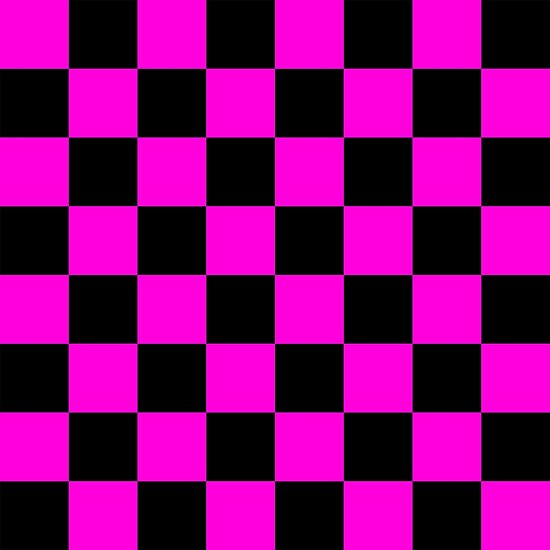
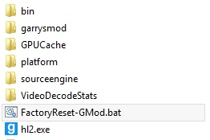

Как установить CSS контент
1 Скачать CSS контент по ссылке
2 Распаковать файлы в архиве по пути: C:\Program Files (x86)\Steam\steamapps\common\GarrysMod\garrysmod\addons\css_content
3 Зайти в игру и проверить